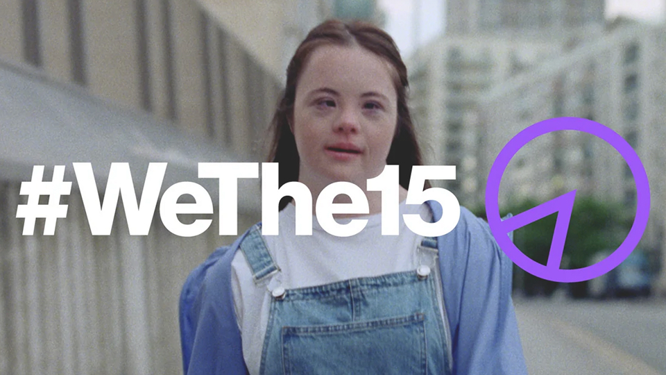
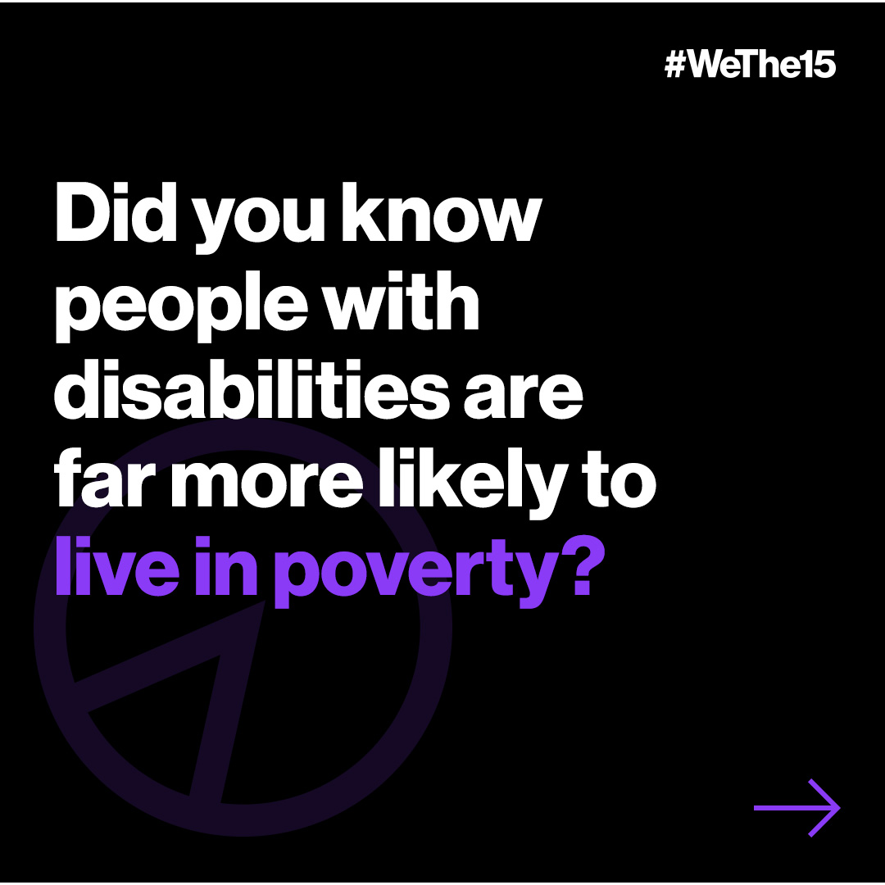
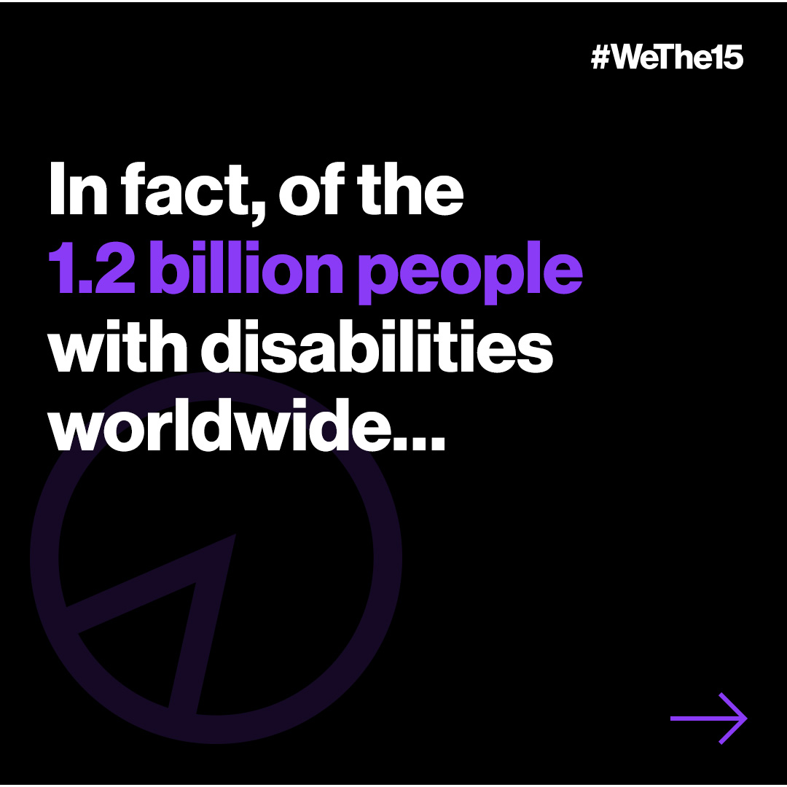
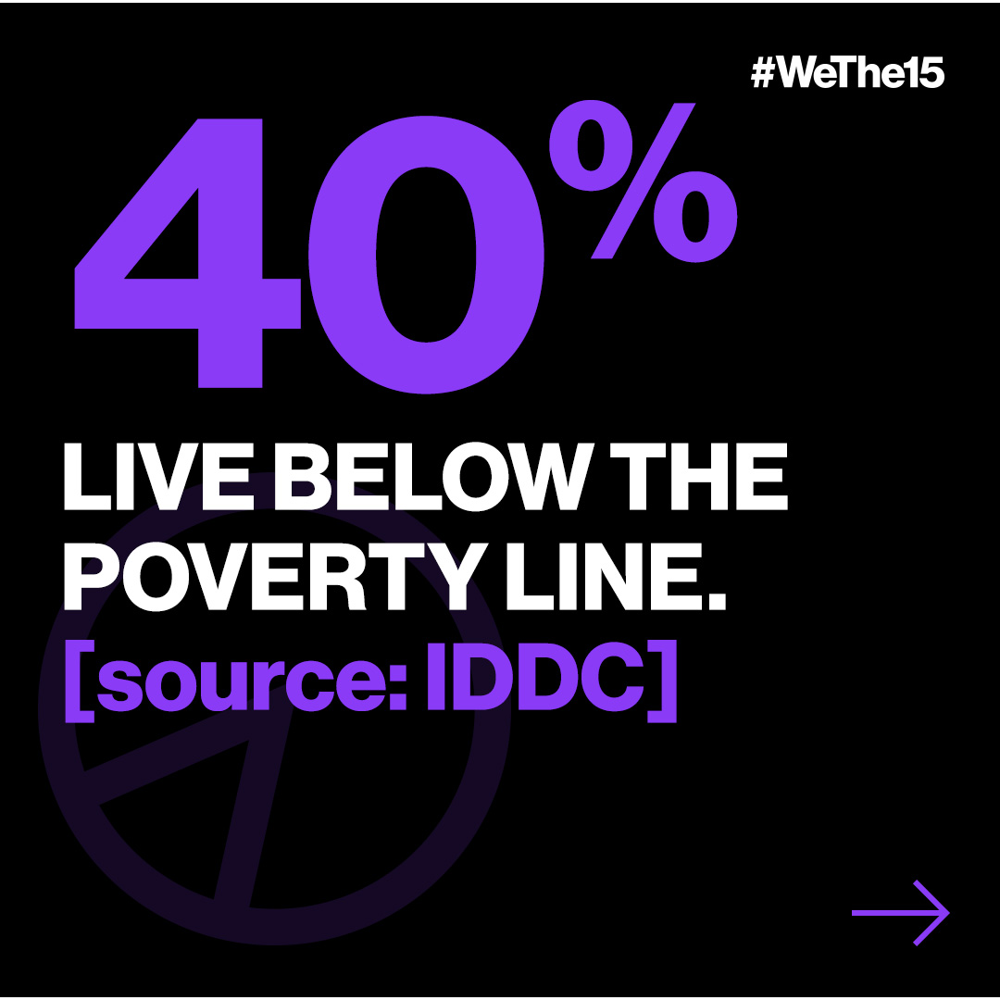
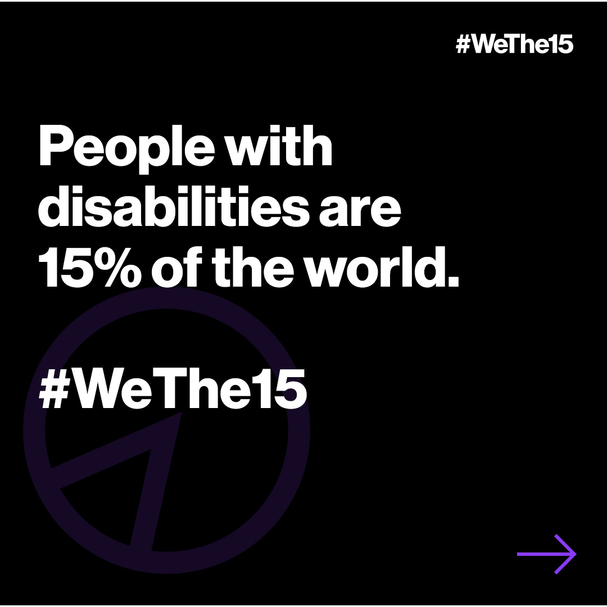
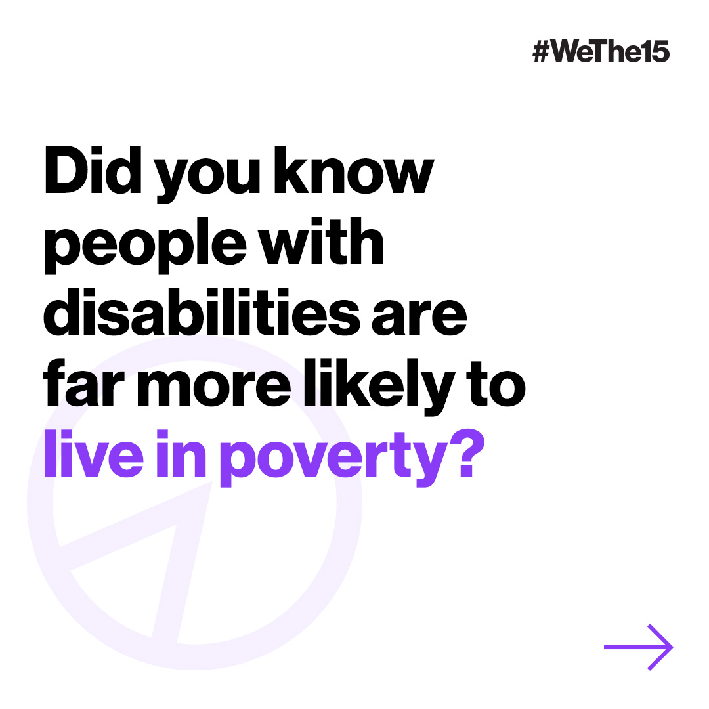
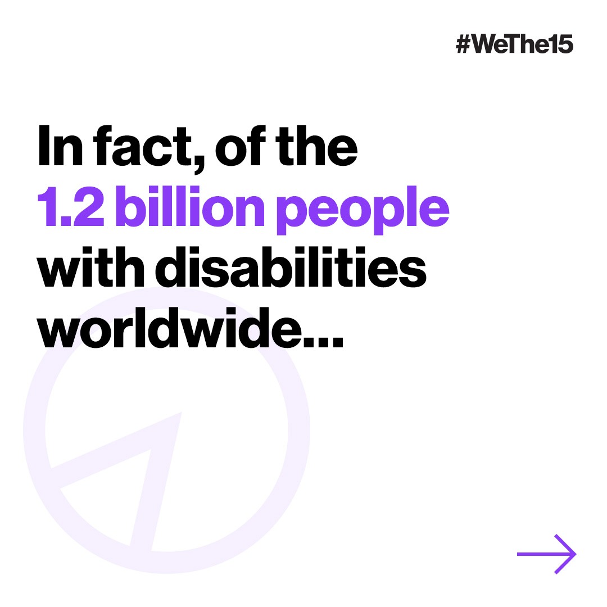
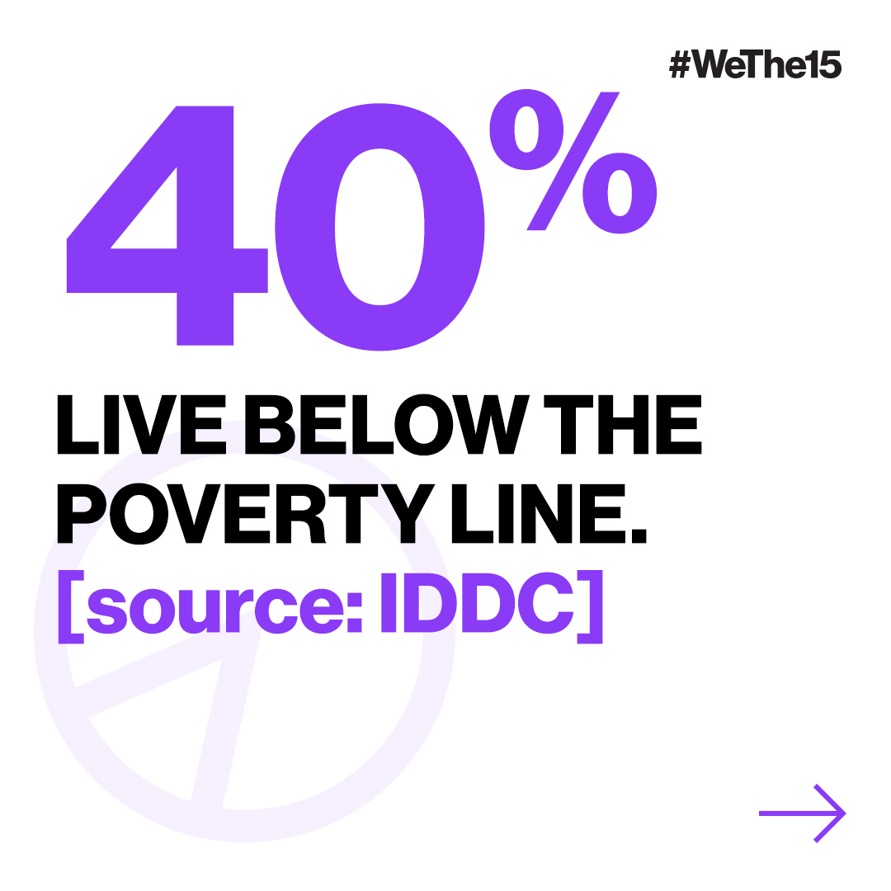
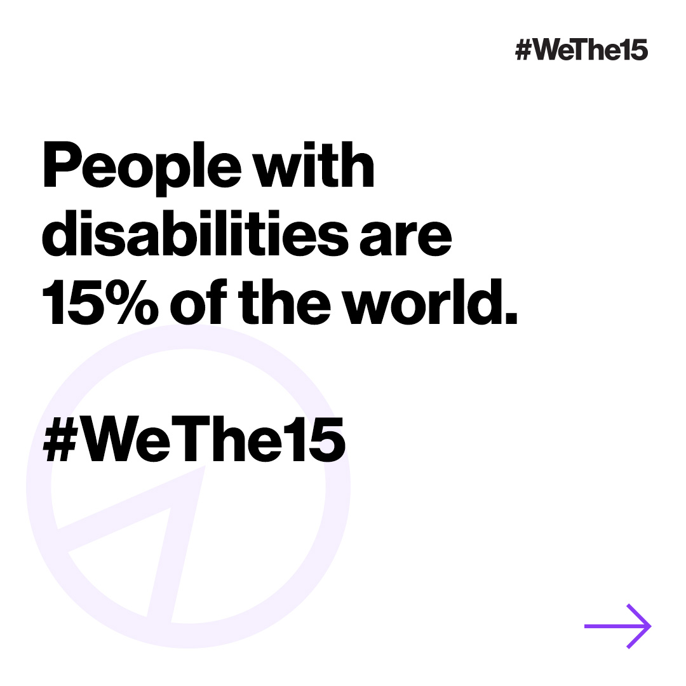

As one of the producers on The Last Photo campaign for CALM x ITV, I helped bring to life a powerful 360 activation designed to challenge perceptions around suicide. The campaign began with an unbranded installation along London’s South Bank, featuring 50 large smiling portraits. Two days later, it was revealed live on ITV that each photo was the last image taken before the individual died by suicide—underscoring the message that “suicidal doesn’t always look suicidal".









I was closely involved in producing the digital elements of the campaign, including the ooh, press & the implementation of QR codes at the exhibition. These codes gave visitors access to audio testimonies from loved ones and connected them directly to detailed story pages hosted on CALM’s website. This digital layer deepened the emotional resonance of the campaign and helped drive engagement beyond the physical installation.
Agency: adam&eveDDB
Creatives: Edward & Xander
Production: Richard Bailey
Designer: Mauricio Brandt
Account Team: Louis Lunts Adam Patel